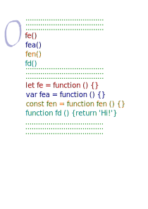
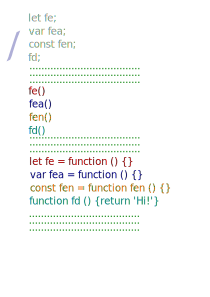
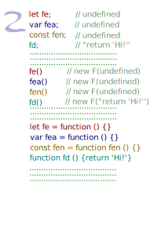
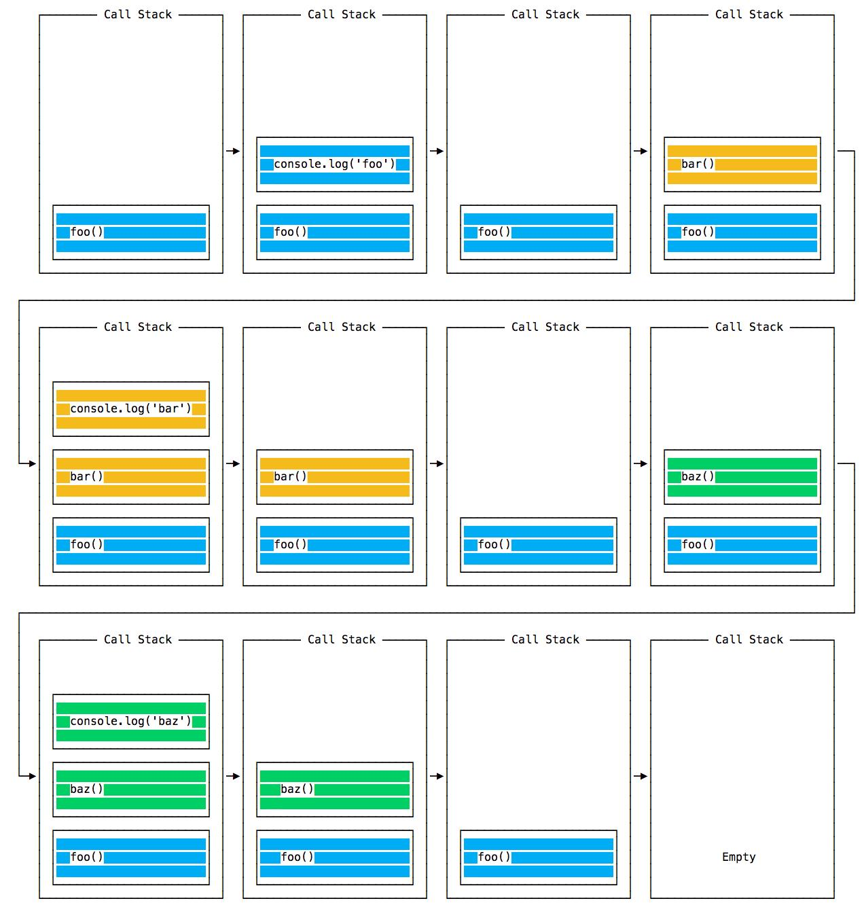

Функцию нужно определить, а затем вызывать.
Синтаксис определения функции
Существует 3 основных синтаксиса:
- Function Declaration
- Function Expression
- Arrow Function
Function declaration
- Служебное слово function
- Имя name - глагол
- Объявление локальных переменных блока (parametrs)
- Блок
- Точка с запятой не обязательна
function add (a, b) {
return a + b;
}
function hello () {
console.log('Hello')
}
Не стандартизованное свойство name
function add (a, b) {
return a + b;
}
add.name
Function expression
Точка с запятой обязательна
Это функция, которая присваивается переменной. Синтаксис бывает 2-х видов - с именем функции и без имени.
Собственное имя не обязательно - его нельзя использовать нигде, кроме как в теле функции для рекусии
let sum = 0;
const add =
function adding(n) {
sum += n;
if(n >= 1) adding(n-1);
}
add(5);
Именованная функция-выражение
const add =
function add (a, b) {
return a + b;
};
Анонимная функция-выражение
const add =
function (a, b) {
return a + b;
};
Синтаксис вызова функции
Функция вызывается 4 разными способами:
- как функция
- как метод
- как конструктор
- комбинация - вызвать метод как функцию и наоборот
Вызов функции состоит из имени функции и обязательных круглых скобок с перечислением аргументов
().
add(2, 3)
hello()
Аргументы
Количество аргументов может отличаться от количества параметров - это не вызовет ошибки.
Если параметр объявлен в теле функции, а при вызове аргумент не присвоен, то локальной переменной будет
присвоен undefined
Если undefined не желателен, то стоит задать значения по умолчанию.
Значения по умолчанию для параметров.
Old school :
function add (a, b) {
let x = a || 2;
let y = b || 3;
return x + y;
};
add();
ES5 :
function add (a = 2, b = 3) {
return a + b;
};
add();
Псевдомассив arguments
Порядок объявления аргументов имеет значение:
function diving (a, b) {
return a / b
}
diving (4, 2)
diving (2, 4)
Как достигается гарантия порядка? С помощью псевдомассива arguments
В каждой функции при вызове создается псевдомассив с именем arguments. Этот псевдомассив
доступен для чтения.
function getLastArg () {
let max =
arguments.length - 1;
return arguments[max];
}
getLastArg(1, 5, "last")
Его можно использовать. Например получим функцию, суммирующую любое количество аргументов:
function summator () {
let sum = 0;
let max =
arguments.length;
for (
let i = 0;
i < max;
i += 1
) {
sum += arguments[i]
}
return sum;
}
summator(1, 2, 3, 4, 5)
Подъем функций
FD vs FE
Особенностью Function Declaration является то, что такую функцию можно вызывать до объявления
Выполнение кода JS происходит в два этапа. На первом этапе компилятор исследует код и собирает объявление
функция (FD) и объявленные переменные. На втором этапе происходит вызов функций и вычисление/присвоение переменных.
Таким образом переменные оказываются вверху области видимости со значеним undefined. Функции FE присвоены
переменным, но в начале кода этим переменным пока не присвоена функция. FE не могут выполняться. А функций
FD уже готовы к выполнению фактически до объявления.
var foo = 1;
function bar() {
if (!foo) {
var foo = 10;
}
return foo;
}
bar();



Возврат значения
void vs return
void - функция, которая не возвращает результат, а изменяет что-либо вне функции.
Служебное слово void зарезервировано, но не используется. Достаточно не использовать return
let a;
function set(num) {
a = [num];
}
set(10);
Array.isArray(a)
a[0]
return - функция, которая возвращает результат в место вызова. Использует служебное слово return
let a;
function set(num) {
return [num]
}
a = set(10);
Array.isArray(a)
a[0]
Чистые функции
- не имеют побочных эффектов т.е. функции, которые не изменяют состояие глобального объекта например
- детерминированы при одинаковых аргументах всегда вернут одинаковый результат
Если есть выбор - используйте чистые функции. Их легко тестировать и можно переиспользовать не рискуя побочными эффектами.
Создать программу из одних чистых функций невозможно - как минимум требуется вывести результат. Но стремиться к этому надо :-)
Две главные особенности функций
Функции – это ссылочный тип
const arr = [
function (a, b) {
return a + b;
},
function (a, b) {
return a * b;
}
]; 4
const sum = arr[0]
const mult = arr[1]
sum(2, 3)
mult(2, 3)
Функции могут передаваться как аргументы другим функциям
function doIt(fn, a, b){
return fn(a, b)
}
function sum(a, b) {
return a + b;
}
doIt(sum, 2, 3)
и могут возвращаться другими функциями
function calc(sign) {
return new Function(
'a',
'b',
`return a ${sign} b`
)
}
let sum = calc("+")
sum(2, 3)
Функции могут иметь собственные свойства и методы
Стек вызовов
Функция при вызове помещается в стек. Затем результат вычисления возвращается в стек в то самое место очереди, откуда призошел вызов.
function baz() {
console.log('baz')
}
function bar() {
console.log('bar')
}
function foo () {
console.log('foo')
bar()
baz()
}
foo()
